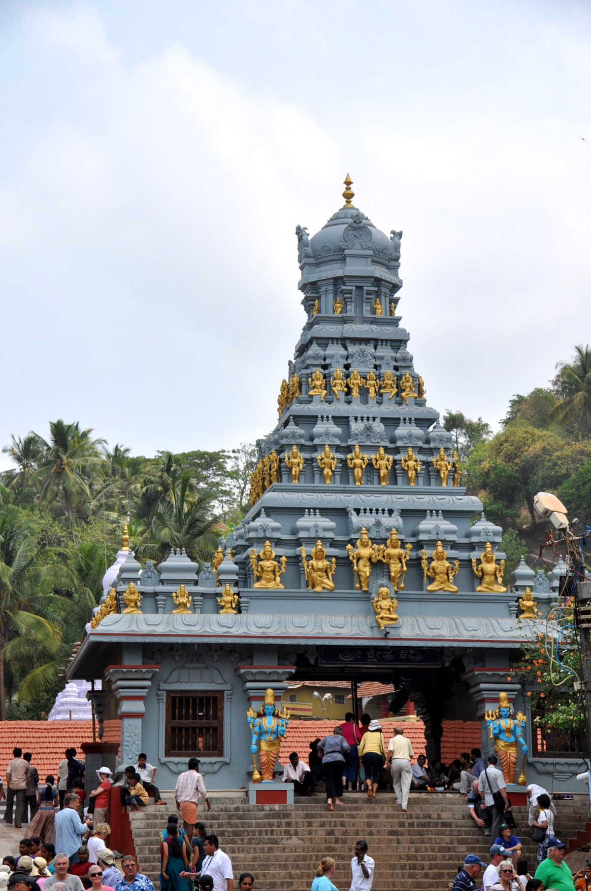

🛕 Temple
Kadri Manjunath Temple
One of the oldest and most significant temples in Karnataka, the Kadri complex is home to a remarkable 10th-century bronze idol of Lokeshvara — considered the oldest dated and inscribed bronze image in South India. The terraced gardens, sacred tank, and meditation caves carved into the hillside create an atmosphere of profound peace. Dedicated to Lord Manjunatha (a form of Shiva), the temple hosts grand celebrations during Shivaratri.